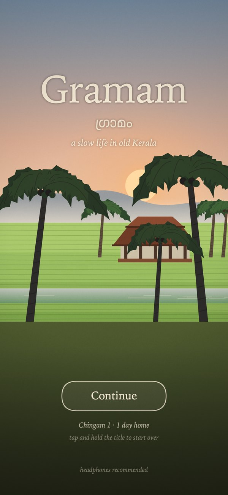
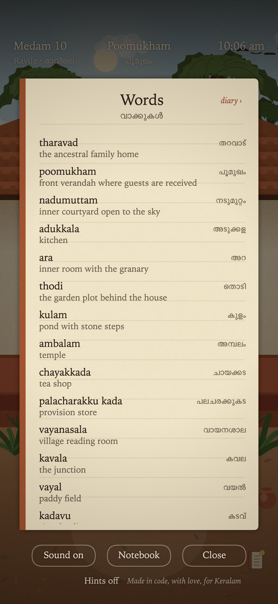

Screenshots




Right-click to save. All screenshots are from the game as it plays; nothing is staged.
A cozy life game set in a Kerala village between 1950 and 1980. You have come home to the family tharavad after years away. The village keeps real time and the real Malayalam calendar. Every picture and every sound is made in code.
Twenty-one hand-painted places: the poomukham and its brass lamp, the smoky adukkala, the nadumuttam open to the rain, the temple, the sacred grove, Velayudhan’s chayakkada, Kunjappan’s shop and his credit book, the reading room, the market street, the school, the talkies, the junction with its KSRTC bus, the paddy field, the river kadavu and Pappan’s ferry, the church, the railway station, and the sea.
The village keeps real time: dusk in the game is dusk outside your window, and Onam is Onam. While you are away the village goes on; when you come back the milk is at the step and a letter is under the stone on the charupadi. Letters arrive from a brother in Madras and then the Gulf, and you write back. Five villagers remember you across a year of small conversations. It ends, a year later, on Thiruvonam.
Things are done with the hand, not a menu: draw water hand over hand, grind chammanthi on the stone, lay the pookalam with a finger, pull the church bell rope, light the deepastambham tier by tier, haul the shore net with the fishermen, play Achan’s harmonium, flick a striker on the reading-room carrom board. Sit on the station bench and the train comes.
A 30-second teaser (1080×1920, no narration) is being finished and will be linked here.


Right-click to save. All screenshots are from the game as it plays; nothing is staged.
Use freely for coverage of the game. Please credit Playpal Apps.
“The village keeps real time. Dusk in the game is dusk outside your window.”
“Sit on the bench and the train comes. That is the only rule the station has.”
“Every picture and every sound was made in code by one person who grew up with these things.”